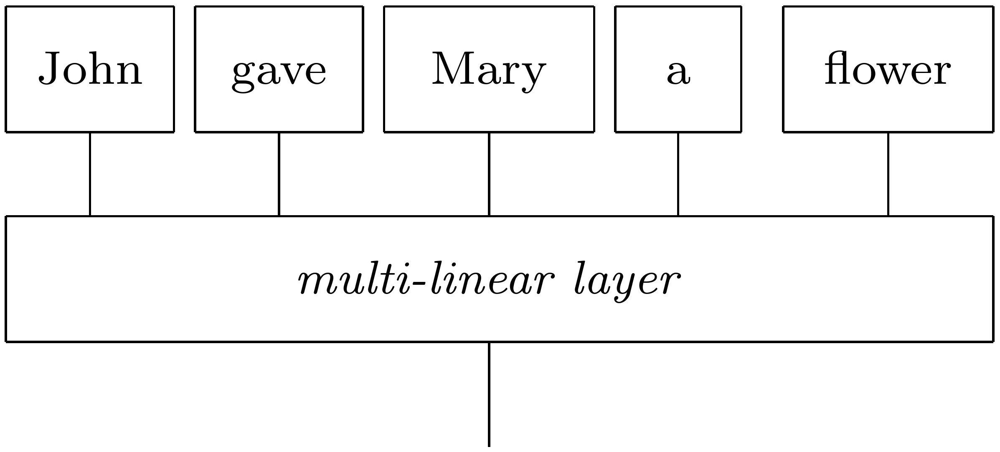

Advanced: Extending lambeq
In this tutorial you will find examples of how to extend lambeq to add more readers, rewrite rules and ansätze, so you can start making your own contributions to the toolkit.
Creating readers
The Reader class is an abstract base class for converting sentences to diagrams. Each reader can be seen as a different compositional model, and lambeq can accommodate any compositional model that represents sentences in a string diagram/tensor network form.
A concrete subclass of Reader should implement the Reader.sentence2diagram() method, which converts a single sentence into a rigid diagram.
Reader example: “Comb” reader
In this example we will create a reader that, given a sentence, it generates the following tensor network:

Note that the particular compositional model is not appropriate for classical experiments, since the tensor that implements the layer can become very large for long sentences. However, the model can be implemented without problems on a quantum computer.
[1]:
import warnings
warnings.filterwarnings('ignore')
from lambeq import AtomicType, Reader
from lambeq.backend.grammar import Box, Id, Word
N = AtomicType.NOUN
class CombReader(Reader):
def sentence2diagram(self, sentence):
words = Id().tensor(*[Word(w, N) for w in sentence.split()])
layer = Box('LAYER', words.cod, N)
return words >> layer
diagram = CombReader().sentence2diagram('John gave Mary a flower')
diagram.draw()

Note that, in the above code, the method tensor() refers to the monoidal product and not to a physical tensor object. What the specific line does, using the monoidal identity Id() as a starting point, is to tensor one-by-one the boxes of the words in the sentence accumulatively, from left to right, into a single diagram, as in a standard fold operation.
[2]:
Id().tensor(*[Word(w, N) for w in ['John', 'gave', 'Mary', 'a', 'flower']]).draw(figsize=(5,1))

This diagram is then combined with the layer box to create the final output of the reader.
Note
In an actual implementation, the layer box should be shared among all sentences so it can be trained properly.
Creating rewrite rules
[3]:
from lambeq import BobcatParser
parser = BobcatParser(verbose='text')
d = parser.sentence2diagram('The food is fresh')
SimpleRewriteRule example: Negation functor
The SimpleRewriteRule class contains functionality that facilitates the creation of simple rewrite rules, without the need to define a new RewriteRule class from scratch. A SimpleRewriteRule finds words with codomain cod and name in list words, then replaces their boxes with the diagram in template.
Here is an example of a negation functor using SimpleRewriteRule. The functor adds a “NOT” box to the wire of certain auxiliary verbs:
[4]:
from lambeq import AtomicType, SimpleRewriteRule
N = AtomicType.NOUN
S = AtomicType.SENTENCE
adj = N @ N.l
NOT = Box('NOT', S, S)
negation_rewrite = SimpleRewriteRule(
cod=N.r @ S @ S.l @ N,
template=SimpleRewriteRule.placeholder(N.r @ S @ S.l @ N) >> Id(N.r) @ NOT @ Id(S.l @ N),
words=['is', 'was', 'has', 'have'])
Note
The placeholder SimpleRewriteRule.placeholder(t) in the template above will be replaced by a box with the same name as the original box and type t.
A list of RewriteRules can be passed to Rewriter to create a rewriting functor. If no list is provided, then the default rewriting rules are used (see Diagram Rewriting).
[5]:
from lambeq import Rewriter
from lambeq.backend import draw_equation
not_d = Rewriter([negation_rewrite])(d)
draw_equation(d, not_d, symbol='->', figsize=(14, 4))

RewriteRule example: “Past” functor
Sometimes, a rewrite rule may become too complicated to be implemented using the SimpleRewriteRule class, so the more general RewriteRule class should be used instead. A concrete subclass of a RewriteRule should implement the methods matches() and rewrite().
A rewriter uses the matches() methods of its RewriteRules to detect if a rule can be applied. If there is a match, then the matching box is replaced with the result of rewrite(box).
In the following example, a functor that changes the tense of certain auxiliary verbs is implemented by directly subclassing RewriteRule:
[6]:
from lambeq import RewriteRule
class PastRewriteRule(RewriteRule):
mapping = {
'is': 'was',
'are': 'were',
'has': 'had'
}
def matches(self, box):
return box.name in self.mapping
def rewrite(self, box):
new_name = self.mapping[box.name]
return type(box)(name=new_name, cod=box.cod)
[7]:
past_d = Rewriter([PastRewriteRule()])(d)
draw_equation(d, past_d, symbol='->', figsize=(9, 2))

Creating ansätze
[8]:
d = parser.sentence2diagram('We will go')
Ansätze for the quantum pipeline are implemented by extending the CircuitAnsatz class, while ansätze for the classical pipeline need to extend the TensorAnsatz class. Both classes extend BaseAnsatz, sharing a common interface. Once an ansatz is instantiated, it can be used as a functor to convert diagrams to either a circuit or a tensor diagram.
An ansatz should be initialised with an ob_map argument, a dictionary which maps a rigid type to the number of qubits in the quantum case, or to a dimension size (e.g. Dim(2, 2)) for the classical case. Some ansätze may require additional arguments (see the API documentation for more details).
In lambeq, a functor is defined by specifying the mappings for objects ob and arrows ar. The CircuitAnsatz and TensorAnsatz classes already implement methods which extend ob_map to map not just base (atomic) types, but also compound types, into qubits and dimensions respectively. Therefore, to complete a new ansatz class, you only need to provide the mapping from rigid boxes to diagrams. This typically involves the following steps:
Obtain the label of the box using the
_summarise_boxmethod. This provides a unique token which can be used to parameterise the box.Apply the functor to the domain and the codomain of the box.
Construct and return an ansatz with new domain and codomain – see how to construct diagrams using the low-level
lambeqbackend here.
CircuitAnsatz example: “Real-valued” ansatz
This ansatz always returns a tensor with real-valued entries, since the ansatz is constructed using only the CNOT and Y rotation gates, which both implement real-valued unitaries.
The CircuitAnsatz provides functionality to add postselections or discards to ensure that domains and codomains for the boxes match. To extend the CircuitAnsatz to create a new ansatz thus only involves providing a function to generate the circuit within a box.
[9]:
from lambeq.backend.quantum import CX, Id, Ry
from lambeq import CircuitAnsatz
def real_ansatz_circuit(n_qubits, params):
circuit = Id(n_qubits)
n_layers = params.shape[0] - 1
for i in range(n_layers):
syms = params[i]
# adds a layer of Y rotations
circuit >>= Id().tensor(*[Ry(sym) for sym in syms])
# adds a ladder of CNOTs
for j in range(n_qubits - 1):
circuit >>= Id(j) @ CX @ Id(n_qubits - j - 2)
# adds a final layer of Y rotations
circuit >>= Id().tensor(*[Ry(sym) for sym in params[-1]])
return circuit
class RealAnsatz(CircuitAnsatz):
def __init__(self, ob_map, n_layers, n_single_qubit_params = 1, discard = False):
super().__init__(ob_map,
n_layers,
n_single_qubit_params,
real_ansatz_circuit,
discard,
[Ry, ])
def params_shape(self, n_qubits):
return (self.n_layers + 1, n_qubits)
[10]:
real_d = RealAnsatz({N: 1, S: 1}, n_layers=2)(d)
real_d.draw(figsize=(12, 10))

TensorAnsatz example: “Positive” ansatz
This ansatz returns a positive tensor, since the individual tensors are element-wise squared before contracted.
[11]:
from lambeq import TensorAnsatz, Symbol
from lambeq.backend import tensor
import math
class PositiveAnsatz(TensorAnsatz):
def _ar(self, functor, box):
# step 1: obtain label
name = self._summarise_box(box)
# step 2: map domain and codomain
dom, cod = functor(box.dom), functor(box.cod)
# step 3: construct and return ansatz
syms = Symbol(name, math.prod(dom.dim), math.prod(cod.dim))
return tensor.Box(box.name, dom, cod, syms ** 2)
[12]:
from lambeq.backend.tensor import Dim
ansatz = PositiveAnsatz({N: Dim(2), S: Dim(2)})
positive_d = ansatz(d)
positive_d.draw()

[13]:
import numpy as np
from sympy import default_sort_key
syms = sorted(positive_d.free_symbols, key=default_sort_key)
sym_dict = {k: -np.ones(k.size) for k in syms}
subbed_diagram = positive_d.lambdify(*syms)(*sym_dict.values())
subbed_diagram.eval()
[13]:
array([8., 8.])
Contributions
We encourage you to implement your own readers, rewrite rules and ansätze and contribute to lambeq – detailed guidelines are available here. Below you can find some sources of inspiration:
rewrites for relative pronouns: [SCC2014a] [SCC2014b]
rewrites to deal with coordination: [Kar2016]
rewrites to reduce the dimension size of verbs: [Kea2014]
rewrites to language circuits (DisCoCirc): [CW2021]
ansätze benchmarked by their expressibility: [SJA2019]
high-level examples of ansätze: [link]
See also: